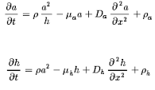
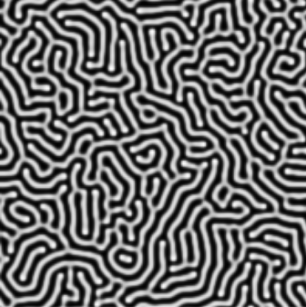
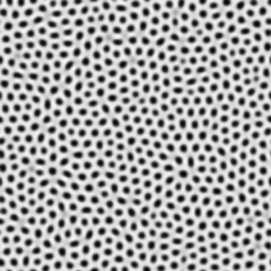
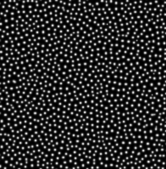

Gierer and Meinhardt showed that using an activator-inhibitor reaction-diffusion system that combines a short-range positive feedback with a long-range negative feedback one can get interesting patterns such as spots and stripes.
You can play around with the parameters to observe different patterns. It will take about a minute to notice anything interesting.
See if you can get any of the below patterns.
  